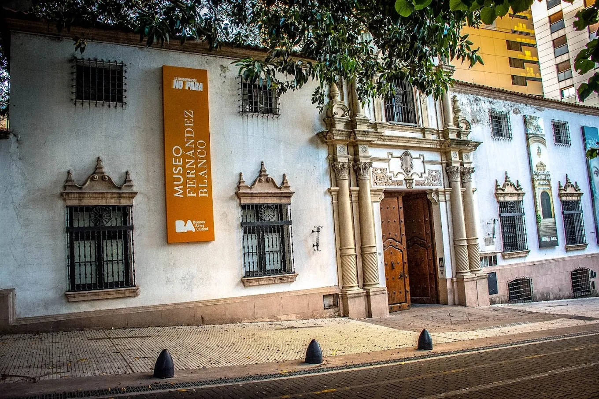
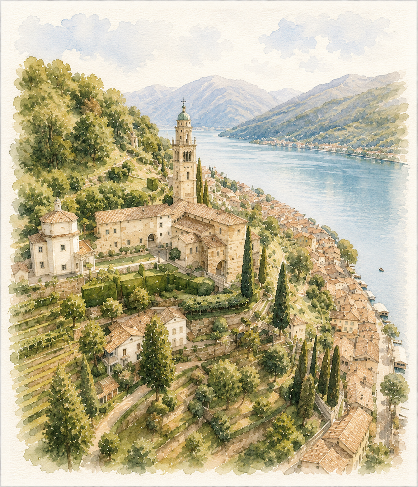
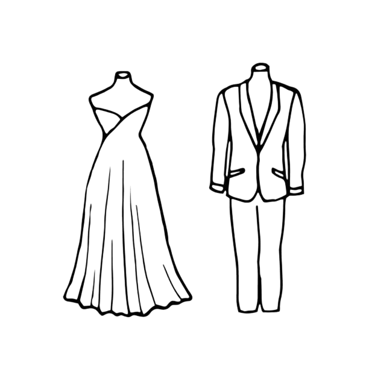
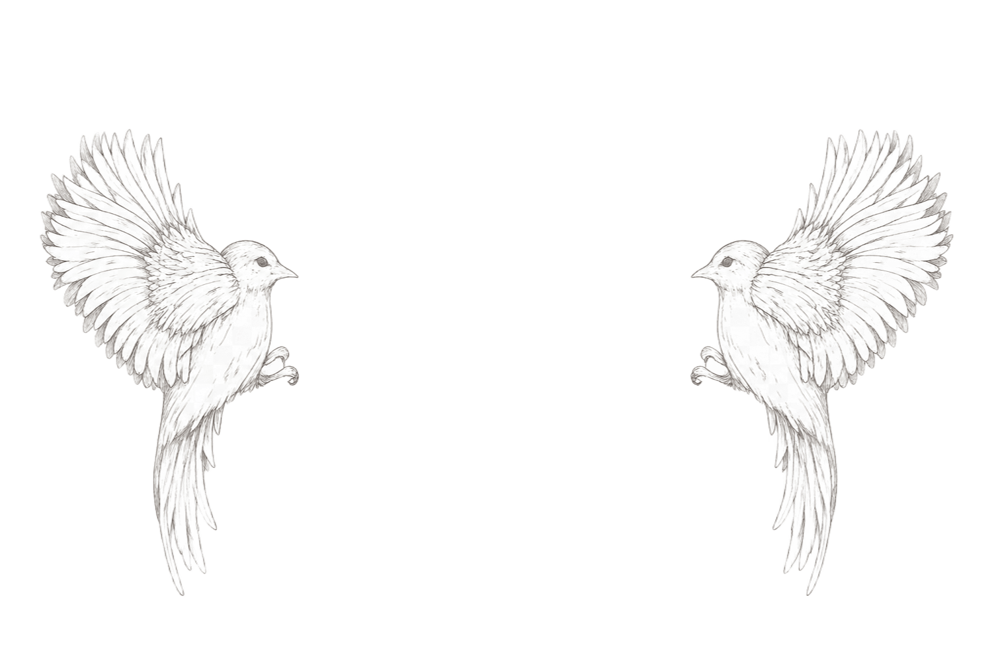
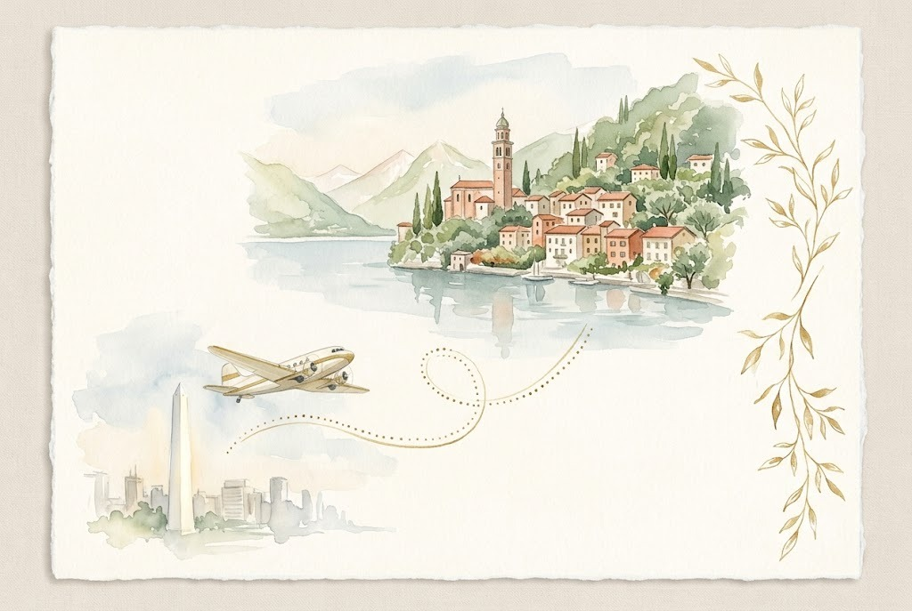

Bienvenidos
Con enorme alegría los invitamos a compartir uno de los momentos más importantes de nuestras vidas.
Será un honor celebrar este día juntos.
CUENTA REGRESIVA
Para nuestro gran día
--
Días
:
--
Horas
:
--
Minutos
:
--
Segundos
26 de septiembre de 2026
NUESTRAS CELEBRACIONES


Civil
Lunes
3 de agosto de 2026
3 de agosto de 2026
12:00 hs
Museo Isaac Fernández Blanco
Suipacha 1422
Buenos Aires, Argentina
Suipacha 1422
Buenos Aires, Argentina

Ceremonia religiosa
Sábado
26 de septiembre de 2026
26 de septiembre de 2026
17:00 hs
Fotos y llegada de invitados
17:30 hs
Ceremonia religiosa
Fotos y llegada de invitados
17:30 hs
Ceremonia religiosa
Chiesa Santa Maria del Sasso
Morcote, Suiza
Morcote, Suiza
CÓDIGO DE VESTIMENTA
Formal elegante

CONFIRMAR ASISTENCIA
Agradecemos que confirmes tu asistencia antes del 20 de julio para poder acompañarnos.
03.08.2026
Civil
Buenos Aires
26.09.2026
Ceremonia & Recepción
Morcote

El viaje
Un camino que nos lleva a Morcote

Toda la información que necesitás para tu viaje a Suiza.
ESPERAMOS COMPARTIR ESTE DÍA INOLVIDABLE CON USTEDES